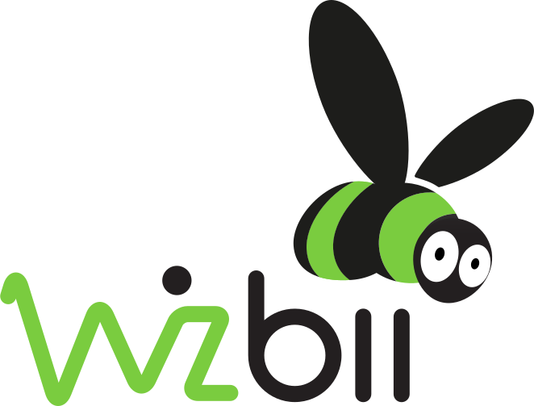

Je suis développeur et formateur dans le monde du web. Diplômé d'un Master MIAGE, je me suis très vite orienté vers le développement frontend et particulièrement vers les technologies JavaScript et CSS. D'un naturel rigoureux, je possède un soucis du détail très important qui me permet de délivrer des produits à la hauteur de vos attentes
Compétences
- JavaScript
- React
- Angular 1 & 2+
- HTML / CSS
- Bootstrap
- NodeJS
- PHP
- Symfony
Expériences
-
Openclassroom - Mentor développement webOctobre 2017 - Aujourd'huiJ'accompagne quelques étudiants qui souhaitent se former au développement web. Openclassroom à mis en place différents parcours de formations qui permettent à des étudiants par le biais de projets de se former au métier du développement. J'interviens sur tous les projets qui touchent au développement web (Intégration HTML et CSS, JavaScript, PHP et Symfony).Biologic - Développeur frontend (Angular 2+)Août 2017 - Mai 2018Au sein d'une équipe de trois développeurs dédiés spécialement au développement frontend, nous avons redéveloppé une application existante développée précédemment en Delphi. L'objectif de l'application est de configurer et monitorer des tests de charge sur des batteries. L'application a été intégralement développée avec Angular 2+. Nous avons paramétré Bootstrap 4 pour qu'il puisse correspondre aux spécifications fournies par le cabinet design. Plotly.js a par ailleurs été utilisé pour la partie liée aux graphiques.Wizbii - Développeur frontend (Angular 1 & React)Décembre 2016 - Juillet 2017En collaboration avec l'équipe backend et design, j'ai pris part à l'évolution de la plateforme Wizbii ainsi que les produits annexes. Cela est passé par le développement d'un CMS maison avec un front en React. Par la suite nous nous sommes chargés d'enrichir la plateforme Wizbii dont le front était à l'époque développé avec Angular 1. Enfin nous avons développé une plateforme de recherche d'aides financières destinée aux jeunes. Celle-ci était développée avec React & Redux. Le travail en collaboration directe avec l'équipe design exigeait une rigueur importante au niveau de l'intégration.Schneider Electric - Développeur fullstack JavaScript (Node + React)Mars 2015 - Décembre 2016Développement d'un système d'automatisation de rapport. Schneider développait une application de gestion d'énergie. L'idée était de développer un ETL qui permettait de récupérer les données via des APIs REST, aggréger ces données et de les restituer au sein de rapports. L'ensemble de la solution était développée à l'aide de services node, dockerisés. J'avais également mis en place un front en React qui permettait de lancer la génération des rapports.
 SFR - Développeur PHPNovembre 2014 - Mars 2015Au sein d'une équipe de trois développeurs, j'ai pris part au développement d'un outil de statistiques qui permettait à SFR d'étudier les données d'utilisation de ses applications mobiles. L'ensemble de la solution, déjà existante était développée en PHP, sans framework. L'application était vieillisante mais il fallait continuer à maintenir l'éxistant et développer de nouvelles fonctionnalités.
SFR - Développeur PHPNovembre 2014 - Mars 2015Au sein d'une équipe de trois développeurs, j'ai pris part au développement d'un outil de statistiques qui permettait à SFR d'étudier les données d'utilisation de ses applications mobiles. L'ensemble de la solution, déjà existante était développée en PHP, sans framework. L'application était vieillisante mais il fallait continuer à maintenir l'éxistant et développer de nouvelles fonctionnalités.
Formation
Master MIAGE
Université Joseph Fourrier (Grenoble)
2014
Licence MIAGE
Université Joseph Fourrier (Grenoble)
2012
DUT Informatique
Université Pierre-Mendès-France (Grenoble)
2011
Publications
Une comparaison entre Lodash et Ramda, deux librairies qui permettent d'utiliser les opérateurs issus de la
programmation fonctionnelle en JavaScript.
La curryfication est un principe important de la programmation fonctionnelle. Explication de ce que c'est et
comment l'utiliser à bon escient!
Issue de la programmtion fonctionnelle, La composition de fonction permet de combiner plusieurs
fonctions afin de produire une fonction plus complexe.
Parcel est un module bundler au même titre que Webpack qui allie simplicité et rapidité. Alors Parcel
peut-il être le successeur de Webpack? A vous de vous faire une idée!
Un article dédié au CSS qui demistifie la création de bordures en utilisant la propriété box-shadow.
Un cours qui permet de se former à AngularJS en développant une application simple. Retour sur les notions
importantes du framework et son écosystème.
Contact
Adresse
91 Avenue de Claix
38180 Seyssins, FRANCE
Contact
remi.michel38@gmail.com